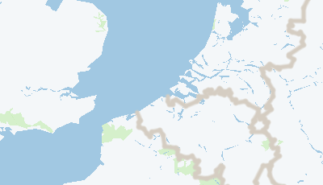
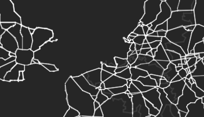
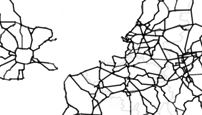
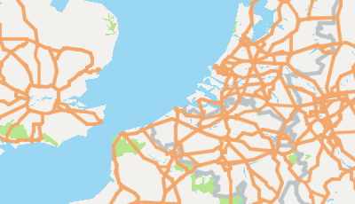
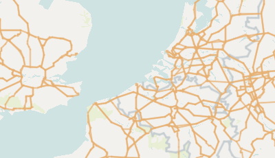

2
A random collection of GeoJSON Open Data samples to get you started with the various FeatureTypes:
Points of NYC MTA stations
MultiPoints in the ocean somewhere
LineStrings of streetcars in Rostock
MultiLineString in New York
Polygons for Philadelpha Police Service Areas
MultiPolygons of parks in Rostock